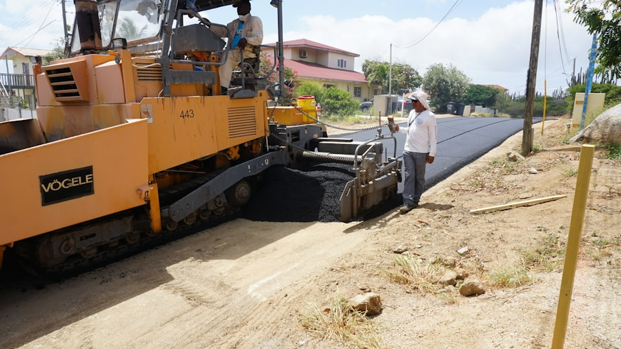
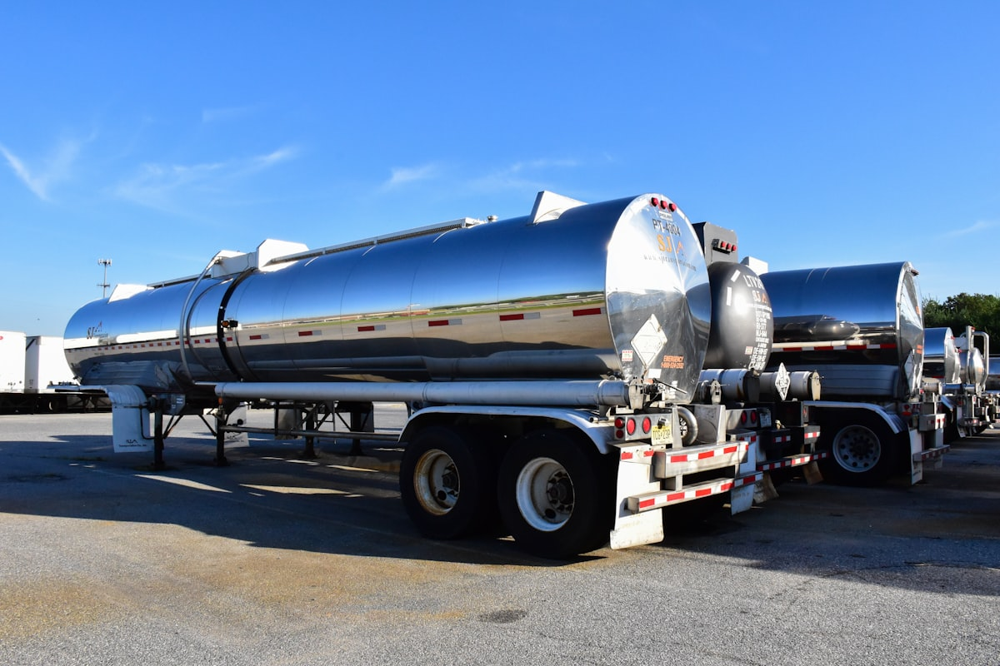
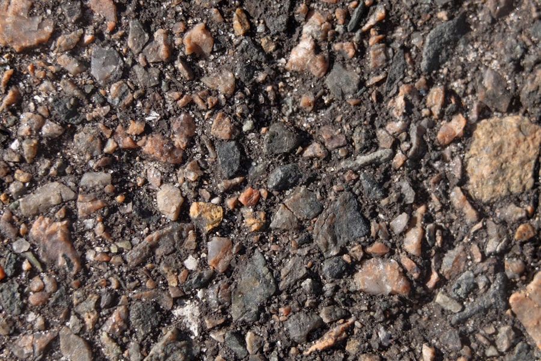

사업영역
Pavement 산업을 중심으로 한 사업 영역
HOME > 사업영역

01
Asphalt Concrete (Ascon)
인우이엔씨는 아스팔트와 콘크리트를 혼합한 포장재인 아스콘을 인천공장에서 직접 제조 및 판매하고 있습니다. 일반 아스콘, 개질 아스콘 등 다양한 아스콘을 통해 많은 고객들의 Needs를 만족시키며 전국의 도로에 납품하고 있습니다.

02
Asphalt
SK에너지(주)와 아스팔트 판매대리점 계약을 맺어 고품질의 다양한 아스팔트 제품을 고객에게 신속, 정확하게 공급하고 있습니다.

03
Viatop
인우이엔씨는 독일의 JRS社로부터 아스팔트 성능 개선용 첨가제인 VIATOP을 수입 및 유통하여 국내 도로의 고품질화에 기여하고 있습니다.